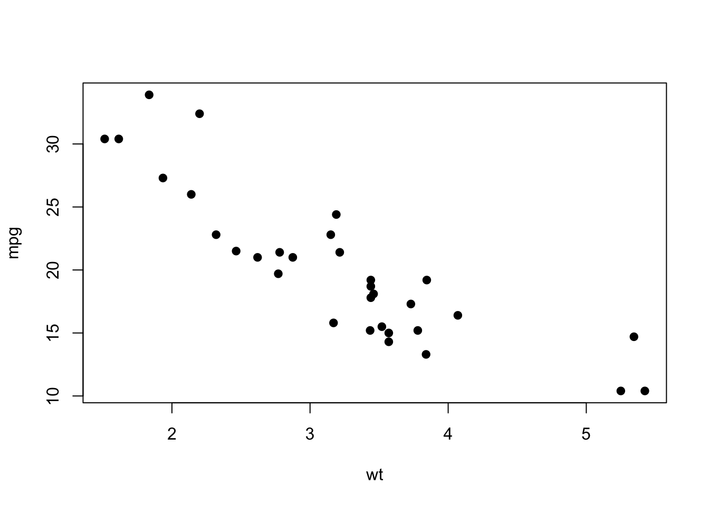
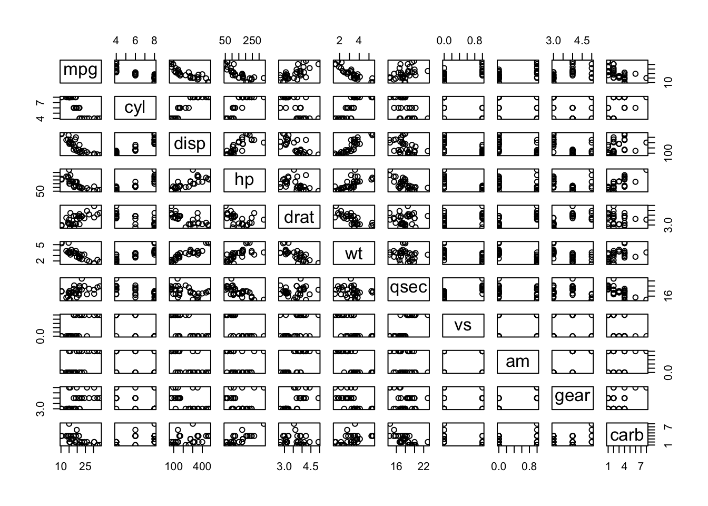
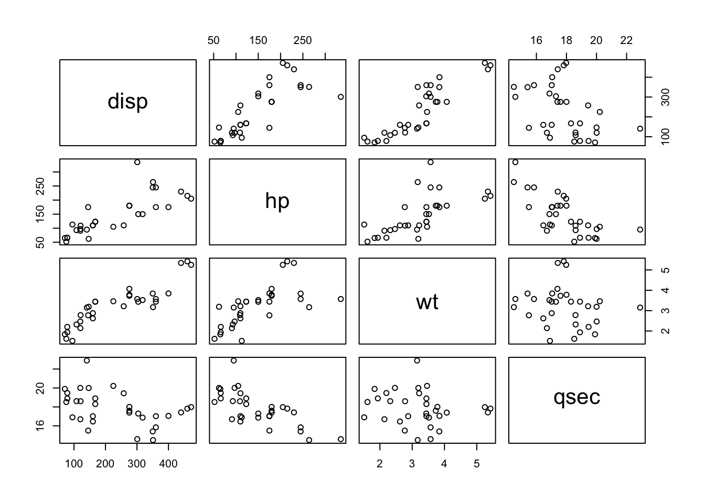
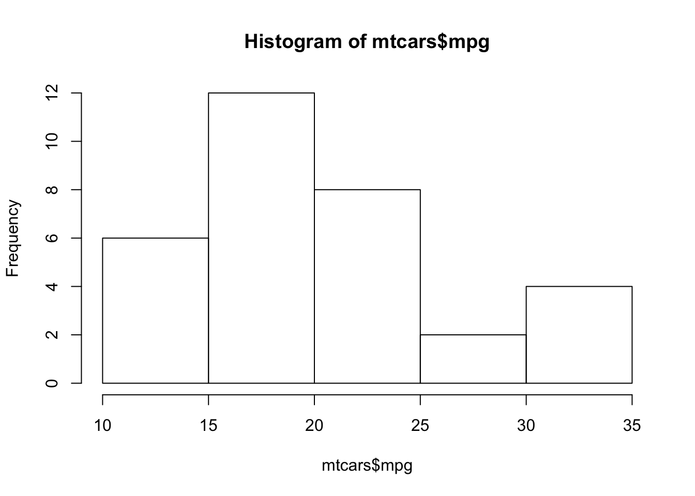
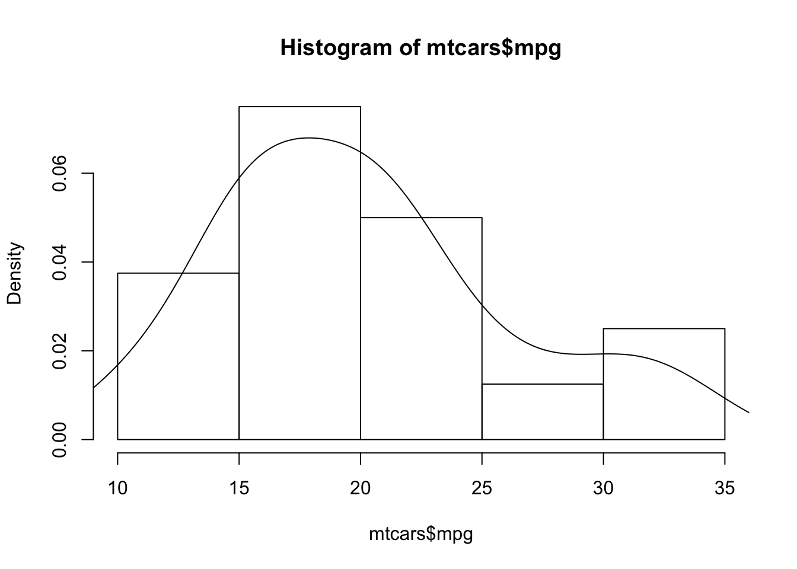
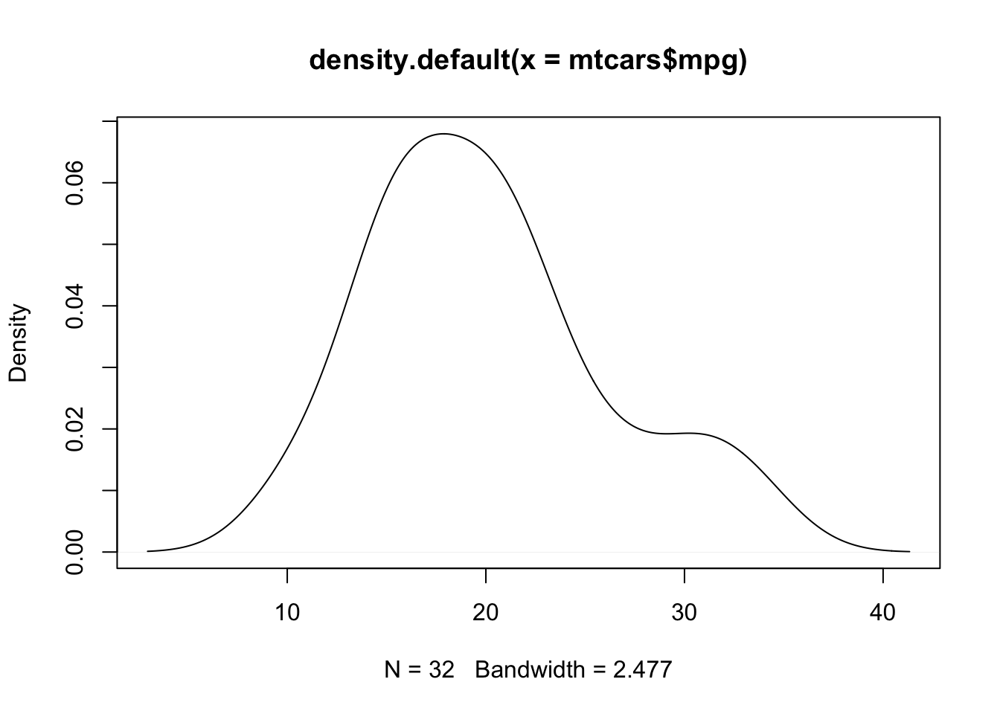
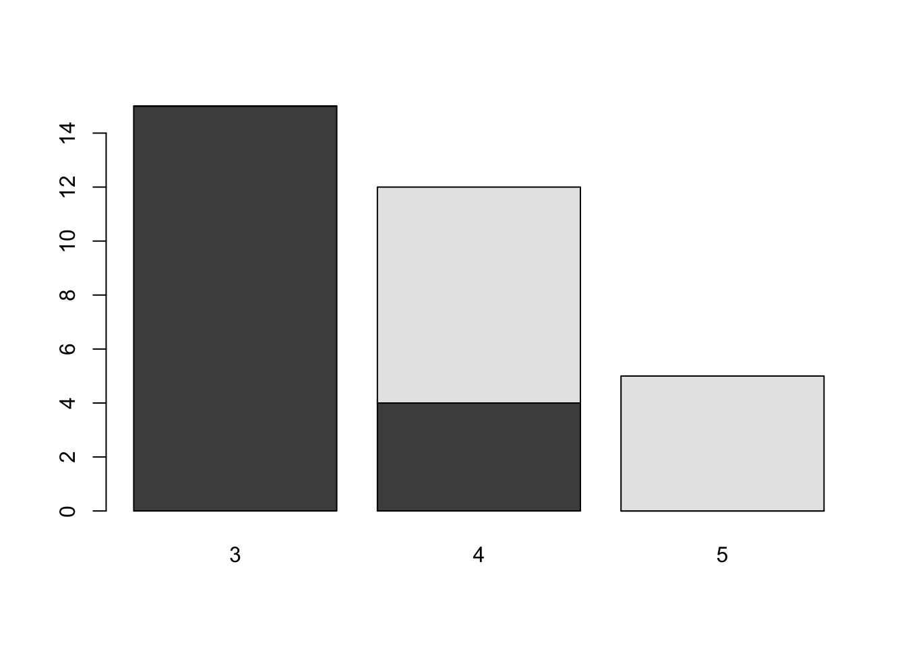
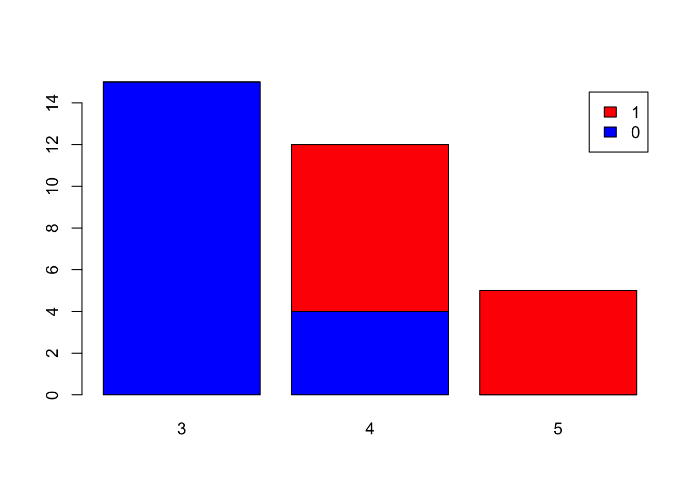
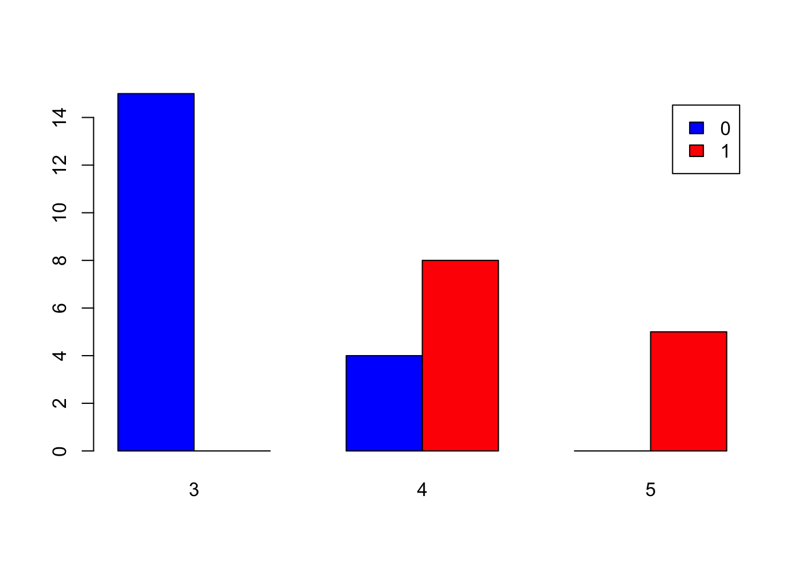

데이터 임상의학 w/ R (2)
Yoon-Ho Hong, MD, PhD
Aug 11, 2018
R & Rstudio 설치하기
The R Project for Statistical Computing https://www.r-project.org/
An integrated development environment (IDE) for R https://www.rstudio.com/
rstudio.cloud (alpha)
Rstudio server cloud https://rstudio.cloud/
Getting Help
?mean
??“weighted mean”
Using Packages
install.packages(“dplyr”)
library(dplyr)
Working directory
getwd()
setwd()
Vectors
Creating vectors
c(2, 4, 6) ## [1] 2 4 62:6 ## [1] 2 3 4 5 6seq(2, 10, by=0.5) ## [1] 2.0 2.5 3.0 3.5 4.0 4.5 5.0 5.5 6.0 6.5 7.0 7.5 8.0 8.5
## [15] 9.0 9.5 10.0rep(1:3, times=3)## [1] 1 2 3 1 2 3 1 2 3rep(1:3, each=3)## [1] 1 1 1 2 2 2 3 3 3Vector functions
x <- c(10:20, 1, 3, 10, 12) # variable assignment
sort(x)## [1] 1 3 10 10 11 12 12 13 14 15 16 17 18 19 20sort(x, decreasing = TRUE) # argument ## [1] 20 19 18 17 16 15 14 13 12 12 11 10 10 3 1rev(x)## [1] 12 10 3 1 20 19 18 17 16 15 14 13 12 11 10length(x)## [1] 15range(x)## [1] 1 20unique(x) # see unique values## [1] 10 11 12 13 14 15 16 17 18 19 20 1 3table(x) # see vounts of values## x
## 1 3 10 11 12 13 14 15 16 17 18 19 20
## 1 1 2 1 2 1 1 1 1 1 1 1 1Selecting vector elements (by position)
a = c("apple", "banana", "melon", "grape")
a[4]## [1] "grape"a[-4]## [1] "apple" "banana" "melon"a[2:4]## [1] "banana" "melon" "grape"a[-(2:4)]## [1] "apple"a[c(1,3)]## [1] "apple" "melon"Selecting vector elements (by value)
x[x == 10]## [1] 10 10x[x < 10]## [1] 1 3x[x %in% c(1, 2, 5)]## [1] 1Programming
for loop
# summation 1 to 10
j = 0
for (i in 1:10){
j = i + j
}
j## [1] 55while loop
i = 0; j = 0
while (i < 10){
i = i + 1
j = j + i
}
i; j## [1] 10## [1] 55if… else statements
if (i > 3){
print("i larger than 3")
} else {
print("i less than 3")
}## [1] "i larger than 3"functions
square = function(x){
squared = x*x
return(squared)
}
square(4)## [1] 16Math functions
sum(x)## [1] 191mean(x)## [1] 12.73333median(x)## [1] 13max(x)## [1] 20min(x)## [1] 1sd(x)## [1] 5.391351var(x)## [1] 29.06667quantile(x)## 0% 25% 50% 75% 100%
## 1.0 10.5 13.0 16.5 20.0round(1.8734, 2)## [1] 1.87exp(x)## [1] 2.202647e+04 5.987414e+04 1.627548e+05 4.424134e+05 1.202604e+06
## [6] 3.269017e+06 8.886111e+06 2.415495e+07 6.565997e+07 1.784823e+08
## [11] 4.851652e+08 2.718282e+00 2.008554e+01 2.202647e+04 1.627548e+05log(x)## [1] 2.302585 2.397895 2.484907 2.564949 2.639057 2.708050 2.772589
## [8] 2.833213 2.890372 2.944439 2.995732 0.000000 1.098612 2.302585
## [15] 2.484907x^2## [1] 100 121 144 169 196 225 256 289 324 361 400 1 9 100 144Environment
ls()## [1] "a" "i" "j" "square" "x"rm(i)R objects
When you create a variable you reserve some space in memory. The variables are assigned with R objects. There are many types of R objects which includes…
- vector
- list
- matrix
- data frame
- factor
Data types of atomic vectors includes…
- numeric
- logical (boolean)
- character
Data type conversion
tc = c(0,1,1,0);class(tc) ## [1] "numeric"tc.logic = as.logical(tc)
tc.num = as.numeric(tc.logic)
tc.char1 = as.character(tc.num)
tc.char2 = as.character(tc.logic)Matrix
# create a matrix from x
mat = matrix(x, ncol = 3)
# select rows/columns/elements
mat[1,]## [1] 10 15 20mat[,3]## [1] 20 1 3 10 12mat[3,2]## [1] 17t(mat) # transpose ## [,1] [,2] [,3] [,4] [,5]
## [1,] 10 11 12 13 14
## [2,] 15 16 17 18 19
## [3,] 20 1 3 10 12mat %*% t(mat) # matrix multiplication## [,1] [,2] [,3] [,4] [,5]
## [1,] 725 370 435 600 665
## [2,] 370 378 407 441 470
## [3,] 435 407 442 492 527
## [4,] 600 441 492 593 644
## [5,] 665 470 527 644 701List
lst <- list(x = 1:5, y = c('a', 'b'))
lst[[2]]## [1] "a" "b"lst$y## [1] "a" "b"lst[2]## $y
## [1] "a" "b"lst["y"]## $y
## [1] "a" "b"Data frames
df <- data.frame(n = 1:3, s = c('a', 'b', 'c'))
df[1,]## n s
## 1 1 adf[3,2]## [1] c
## Levels: a b cstr(df)## 'data.frame': 3 obs. of 2 variables:
## $ n: int 1 2 3
## $ s: Factor w/ 3 levels "a","b","c": 1 2 3dim(df)## [1] 3 2nrow(df);ncol(df)## [1] 3## [1] 2Factor
char = c("a", "b", "c", "b", "c", "d")
fac = factor(char)
levels(fac)## [1] "a" "b" "c" "d"데이터 불러오기
Read a comma separated value (csv) file
demograph = read.csv("Demographic.csv")
head(demograph)## SubjectID Age Gender Race
## 1 100256 53.00000 M White
## 2 100272 62.32877 M White
## 3 10059 69.00000 F White
## 4 100603 56.86849 M White
## 5 100626 58.00000 M White
## 6 100806 66.00000 M WhiteRead a delimited text file
proact = read.delim("proact_sample.txt", sep="|")
# random 1/20 sample of the PROACT dataset데이터 쓰기
demograph$Age = round(demograph$Age)
write.csv(demograph, file = "demograph_roundage.csv", row.names = F, quote = F)
write.table(demograph, file = "demograph_roundage.txt", quote = F, row.names = F)그래프
Scatter plot
attach(mtcars)
plot(wt, mpg, pch=19)
pairs(mtcars)
pairs(mtcars[c("disp", "hp", "wt", "qsec")])
Histogram
hist(mtcars$mpg)
hist(mtcars$mpg, freq = F)
lines(density(mtcars$mpg))
plot(density(mtcars$mpg))
Bar Plot
counts <- table(mtcars$gear)
barplot(counts, main="Car Distribution",
xlab="Number of Gears")
Grouped Bar Plot
counts <- table(mtcars$am, mtcars$gear)
barplot(counts)
barplot(counts, col=c("blue","red"),
legend = rownames(counts))
barplot(counts, col=c("blue","red"),
legend = rownames(counts), beside=TRUE)
Boxplot
boxplot(mpg~cyl,data=mtcars, main="Car Milage Data",
xlab="Number of Cylinders", ylab="Miles Per Gallon")
- Saving graph
- Export -> Save As…
- You can also save the graph via code using one of the following functions…
- pdf(“mygraph.pdf”)
- png(“mygraph.png”)
- jpeg(“mygraph.jpg”)
- bmp(“mygraph.bmp”)
- postscript(“mygraph.ps”)
연습 문제
Slack #textbook 채널에 가서 ISLR pdf 파일을 열어 Chapter 2, Page 54-57 의 연습문제 8-10 을 풀어보자.
https://rstudio.cloud 에 가서 sign up 한후, 아래 link 에 접속하여, https://rstudio.cloud/spaces/2905/join?access_code=QuMv1uIYqUTizsyRrXX8JjK8eoRpk5vJO%2BoiiqgZ Data medicine 101 스페이스의 Basics 프로젝트를 copy 한 후 R script 를 작성한다.